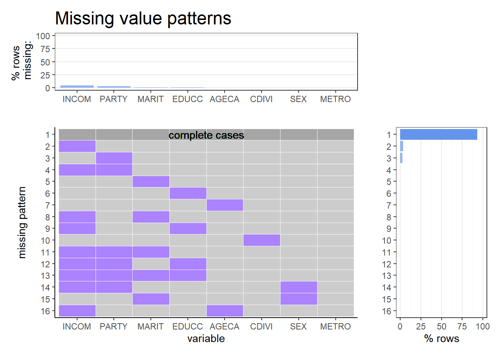
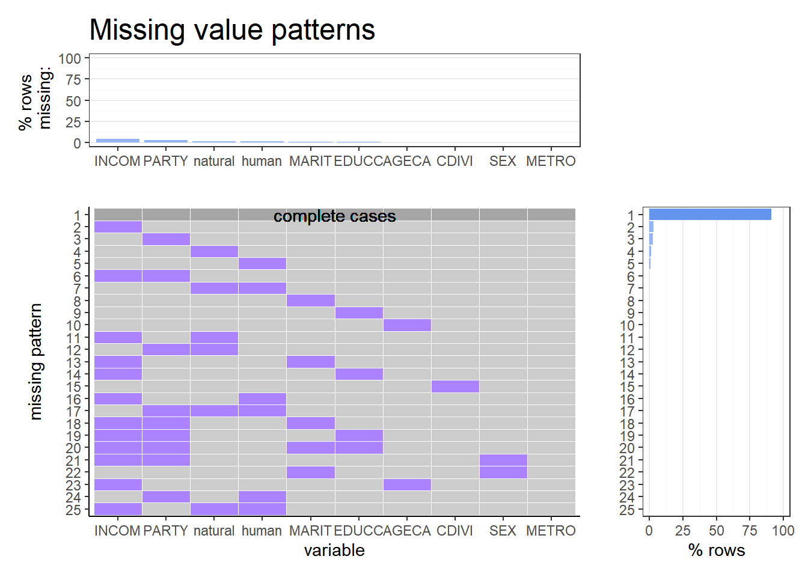
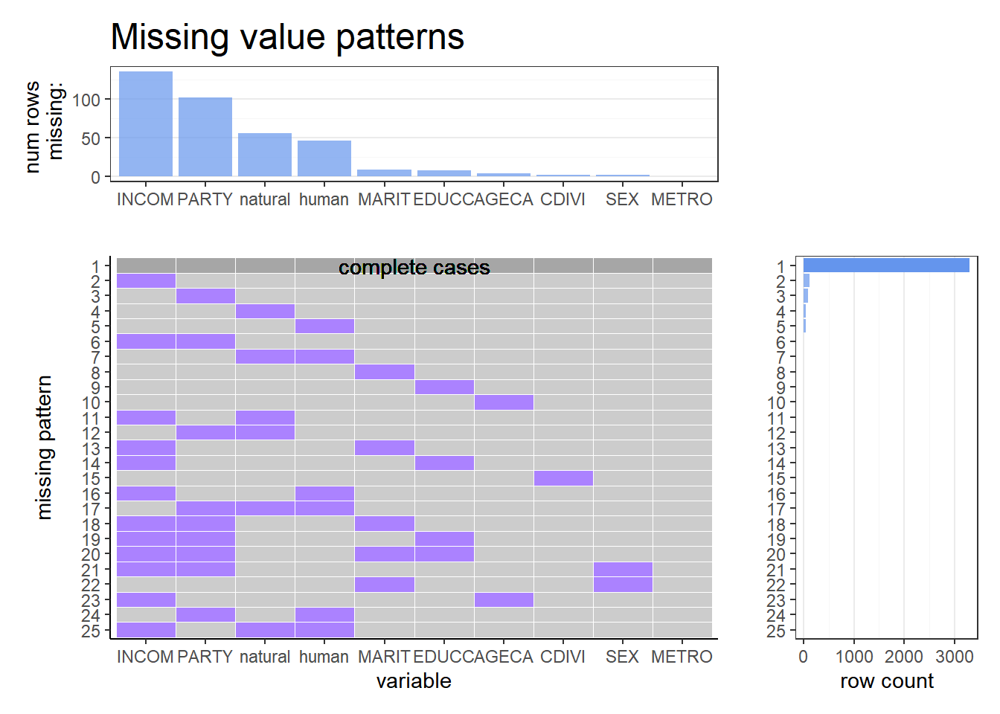
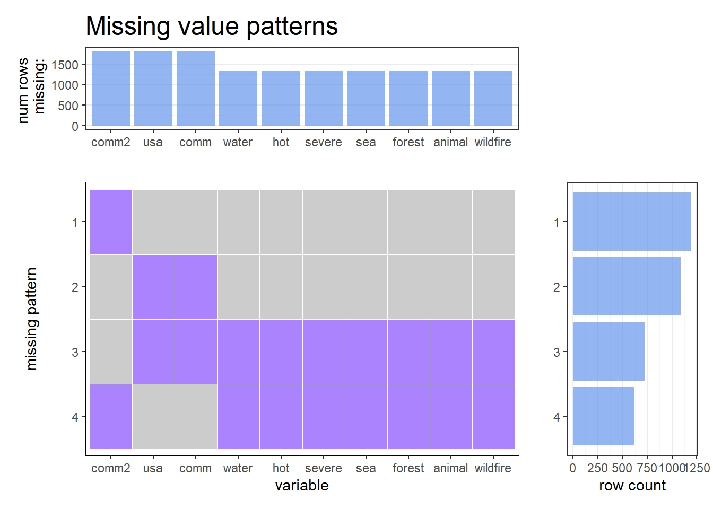
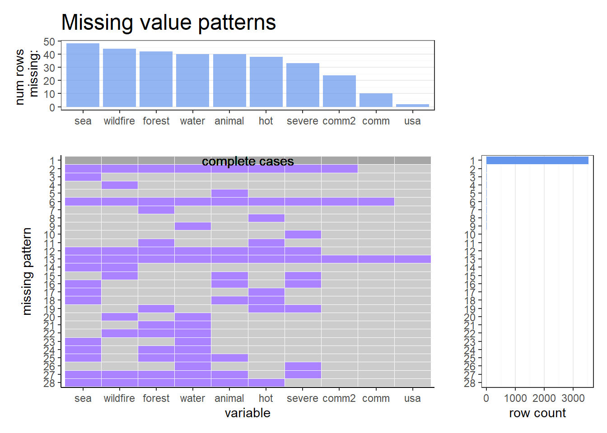
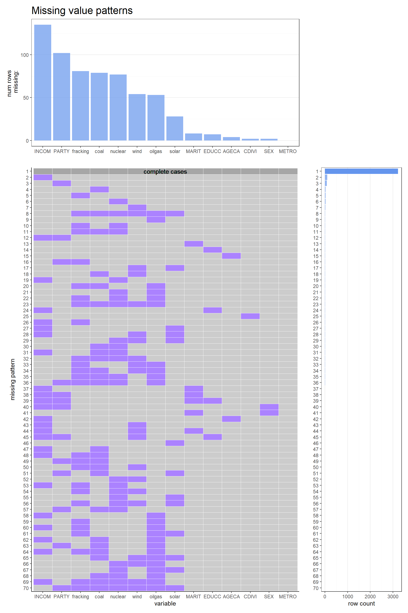

Chapter 4 Missing values
library(tidyverse)
library(patchwork)
library(ggnewscale)
library(foreign)df55 <- read.spss("./data/W55_Oct19/ATP W55.sav", to.data.frame=TRUE)Since we have had some questions about this data as below, we are going to investigate the missing or DK(Don’t know)/Refuse patterns in the following. Note that our data has weights which correct the potential bias of the attributes of the respondents of the questionnaires based on some other referenced large data, we may also present the weighted missing or DK/Refuse patterns by the final version.
(Note!: If I have time tomorrow, I will modify the plot function to give weighted missing patterns)
Q1. Although the survey pointed out supported parties as a relevant factor, are educations or incomes also related to the opinion toward climate change issues (ex. whether the climate change is due to human activities or just natural patterns in global climate)? We address this issue upon trying to control other relevant effects such as supported parties.
Q2. From the survey, it is seen that Democrats are more likely to say that the federal government is doing too little for key aspects of the environment, and Democrats are more likely to think the climate change is due to human activities. With respect to this, are Democrats (Republicans) also more (less) recognizing that the climate changes are affecting their local communities (no matter what the reason of the change is) in the first place? We address this issue upon trying to control other relevant effects such as regions.
Q3. From the survey, it is seen that majority of people think that they should decrease the oil drilling or coal mining, and they should increase natural electricity generations such as one by wind or land heat. However, their opinion is separate with respect to whether they should increase the new clear power plants (Yes:49% vs No:49%). Here, how do factors (sex, age, party, income, regions,…) relate to the choice Yes and No.
Q4. The survey includes some questions about the respondents’ personality. Is personality affecting one’s attitude towards climate changes and willingness to take actions to reduce climate change?
Q5. Has the public’s attitude towards climate change evolved over time? Does this change correlate with the change in election outcomes? Is it different across regions and groups?
4.1 Respondents’ attributes
From Q1 to Q3, we use the following variables as respondents’ attributes:
F_METRO: Whether they live in metropolitan area or not
F_CDIVISION: Their regions
F_AGECAT: their age categories
F_SEX: their sex
F_EDUCCAT: their education levels
F_MARITAL: their marital status
F_PARTYSUM_FINAL: their supporting parties
F_INCOME: their income categories
Actually, there are no missing values other than “DK/Refuse” in these attributes.
The “DK/Refuse” patterns are as the following where the purple tiles represent them.
It is consistent with out intuition that the largest DK/Refuse patterns are for F_INCOME and F_PARTYSUM_FINAL.
df55_attr_to_NA <- df55 %>%
dplyr::select(F_METRO,
F_CDIVISION,
F_AGECAT,
F_SEX,
F_EDUCCAT,
F_MARITAL,
F_PARTYSUM_FINAL,
F_INCOME) %>%
mutate(F_CDIVISION=gsub(F_CDIVISION,pattern="DK/Ref",replacement = NA, ignore.case = FALSE)) %>%
mutate(F_AGECAT=gsub(F_AGECAT,pattern="DK/REF",replacement = NA, ignore.case = FALSE)) %>%
mutate(F_SEX=gsub(F_SEX,pattern="Refused",replacement = NA, ignore.case = FALSE)) %>%
mutate(F_EDUCCAT=gsub(F_EDUCCAT,pattern="Don't know/Refused",replacement = NA, ignore.case = FALSE)) %>%
mutate(F_MARITAL=gsub(F_MARITAL,pattern="Refused",replacement = NA, ignore.case = FALSE)) %>%
mutate(F_PARTYSUM_FINAL=gsub(F_PARTYSUM_FINAL,pattern="DK/Refused/No lean",replacement = NA, ignore.case = FALSE)) %>%
mutate(F_INCOME=gsub(F_INCOME,pattern="Refused",replacement = NA, ignore.case = FALSE))
colnames(df55_attr_to_NA)## [1] "F_METRO" "F_CDIVISION" "F_AGECAT"
## [4] "F_SEX" "F_EDUCCAT" "F_MARITAL"
## [7] "F_PARTYSUM_FINAL" "F_INCOME"names(df55_attr_to_NA) <- substring(names(df55_attr_to_NA), 3)
names(df55_attr_to_NA) <- substring(names(df55_attr_to_NA), 1,5)
df55_attr_to_NA %>% plot_missing(percent= TRUE)
Note that there are no large refused patterns which might affect our analyses in any variables. If these DK/Refuse patterns were large, we would have to check whether the answers for questionnaires of interest are not severely unbiased for the DK/Refuse patterns.
4.2 Q1. Opinion toward climate change factor and their attributes
For Q1, we use the the questions below:
EN7_W55: How much do you think human activity, such as the burning of fossil fuels, contributes to global climate change?
EN8_W55: How much do you think natural patterns in the Earth’s environment contribute to global climate change?
Similarly to the attribute information, there are no missing values but there are “refuse” answers. The refusal patterns for these questions are presented below. Note that the explanatory variable are written in uppercase letter, while the explained ones in lowercase.
df55_Q1_to_NA <- df55 %>%
dplyr::select(
EN7_W55,
EN8_W55,
) %>%
mutate(EN7_W55=gsub(EN7_W55,pattern="Refused",replacement = NA, ignore.case = FALSE)) %>%
mutate(EN8_W55=gsub(EN8_W55,pattern="Refused",replacement = NA, ignore.case = FALSE))
names(df55_Q1_to_NA) <- c("human","natural")
df55_Q1_to_NA <- cbind(df55_Q1_to_NA,df55_attr_to_NA)
df55_Q1_to_NA %>% plot_missing(percent= TRUE)
df55_Q1_to_NA %>% plot_missing()
Like the one for respondents’ attributes, there are no large refusal patterns. Also, there are no prominent refusal correlations that we should pay attention to, since the largest refusal patterns have only one refused item.
4.3 Q2. Opinion toward climate change impact and their attributes
For CLIM9F1 (for Form 1) and F2 (for Form 2), the questions are as below:
How much, if at all, do you think global climate change is currently affecting…
CLIM9F1_a_W55: The United States (1 A great deal, 2 Some, 3 Not too much, 4 Not at all)
CLIM9F1_b_W55: Your local community (1 A great deal, 2 Some, 3 Not too much, 4 Not at all)
CLIM9F2_W55: How much, if at all, do you think global climate change is currently affecting your local community?
Questions from CLIM10_a_W55 to CLIM10_g_W55 are asked for respondents who answered 1 or 2 for CLIM9F1_b_W55 or CLIM9F2_W55.
The alternatives are either 1 or 2: 1 Yes, a major way, 2 No, not a major way
CLIM10_a_W55: Droughts or water shortages
CLIM10_b_W55: Long periods of unusually hot weather
CLIM10_c_W55: Severe weather, like floods or intense storms
CLIM10_d_W55: Rising sea levels that erode beaches and shore lines
CLIM10_e_W55: Damage to forests and plant life
CLIM10_f_W55: Harm to animal wildlife and their habitats
CLIM10_g_W55: More frequent wildfires
One can see from below that in Form 1, CLIM9F1_a_W55, CLIM9F1_b_W55 are not missing, Likewise, CLIM9F2_W55 is not missing for Form 2.
df55_Q2_to_NA <- df55 %>%
dplyr::select(
CLIM9F1_a_W55,
CLIM9F1_b_W55,
CLIM9F2_W55,
CLIM10_a_W55,
CLIM10_b_W55,
CLIM10_c_W55,
CLIM10_d_W55,
CLIM10_e_W55,
CLIM10_f_W55,
CLIM10_g_W55
)
names(df55_Q2_to_NA) <- c("usa","comm","comm2","water","hot","severe","sea","forest","animal","wildfire")
df55_Q2_to_NA %>% plot_missing()
Also, it is confirmed from below that the questions CLIM10_X_W55 for X=a,…,g are missing only if CLIM9F1_b_W55 or CLIM9F2_W55 is answered by 3 Not too much, 4 Not at all, or “Refused.”
Therefore, the only essential missing values of CLIM10_X_W55 is the one when comm or comm2 is “Refused” or when they are “Refused” by themselves.
df55_Q2_to_NA %>% filter(is.na(water)==TRUE) %>% group_by(comm,comm2,water) %>%summarise(n())## # A tibble: 6 x 4
## # Groups: comm, comm2 [6]
## comm comm2 water `n()`
## <fct> <fct> <fct> <int>
## 1 Not too much <NA> <NA> 402
## 2 Not at all <NA> <NA> 208
## 3 Refused <NA> <NA> 10
## 4 <NA> Not too much <NA> 437
## 5 <NA> Not at all <NA> 272
## 6 <NA> Refused <NA> 14We then investigate the refusal patterns here. Although it is seen that the number of missing rows is small enough to dismiss, let’s discuss in more detail.
From the refusal patterns plot below, the most frequent refusal pattern is refusals for all variables. It is suspected that the reason for this is that answering them was felt like time-consuming and bothering because of (1) or (2) below:
- their personality (not relating to their answers)
- the respondents were not sure about or did not know a concrete impact of climate change on any of the items.
In the case of (1), the missing pattern is probably “missing completely at random (MCAR)” or “missing at random (MAR),” since in this case their personality is independent of the answers for CLIM10_X_W55 (impact on one’s community).
For the other top refusal patterns where only one variable is refused, it is more strongly suspected that the respondents did not know whether there were an impact on the particular item.
Hence, hereafter we can rationally assume either (1) the missing pattern is either MCAR or MAR or (2) the refused answers for these questions imply “2 No, not a major way.”
In the case of (1), it is known that the relationship of explanatory variables and explained one (more precisely, the least squared estimator of the slope for a true linear model) can be inferred unbiasedly. Similar argument holds at least qualitatively for discrete explanatory variables.
In the case of (2), the missing values are no longer missing (they are “2 No”).
Therefore, it suffices to simply compute the proportion of “1 Yes, a major way” to all non-missing values and analyse the difference in the proportions between supporting parties to answer Q3.
df55_Q2_to_REF <- as.matrix(df55_Q2_to_NA)
df55_Q2_to_REF <- ifelse(is.na(df55_Q2_to_REF),"not missing",df55_Q2_to_REF)
for(i in 1:nrow(df55_Q2_to_REF)){
for(j in 3:ncol(df55_Q2_to_REF)){
if(df55_Q2_to_REF[i,2]=="Refused" || df55_Q2_to_REF[i,3]=="Refused"){
df55_Q2_to_REF[i,j] <- "Refused"
}
}
}
df55_Q2_to_REF <- df55_Q2_to_REF %>%
gsub(pattern = "Refused", replacement = NA, ignore.case = FALSE) %>%
as.data.frame()
df55_Q2_to_REF %>% plot_missing(percent= TRUE)
df55_Q2_to_REF %>% plot_missing()
4.4 Q3. Opinion toward nuclear power and their attributes
For Q3, we use the questions below about agreeing or disagreeing with more nuclear power plants to generate electricity.
ENV2_a_W55: More offshore oil and gas drilling in U.S. waters
ENV2_b_W55: More nuclear power plants to generate electricity
ENV2_c_W55: More coal mining
ENV2_d_W55: More solar panel “farms”
ENV2_e_W55: More hydraulic fracturing, sometimes called “fracking,” for oil and natural gas
ENV2_f_W55: More wind turbine “farms”
Similarly to the attribute information, there are no missing values but there are “refuse” answers. Those refusal patterns are presented below for questions including others such as more coal mining or more natural energy. Note that the explanatory variable are written in uppercase letter, while the explained ones in lowercase.
df55_Q3_to_NA <- df55 %>%
dplyr::select(
ENV2_a_W55,
ENV2_b_W55,
ENV2_c_W55,
ENV2_d_W55,
ENV2_e_W55,
ENV2_f_W55,) %>%
mutate(ENV2_a_W55=gsub(ENV2_a_W55,pattern="Refused",replacement = NA, ignore.case = FALSE)) %>%
mutate(ENV2_b_W55=gsub(ENV2_b_W55,pattern="Refused",replacement = NA, ignore.case = FALSE)) %>%
mutate(ENV2_c_W55=gsub(ENV2_c_W55,pattern="Refused",replacement = NA, ignore.case = FALSE)) %>%
mutate(ENV2_d_W55=gsub(ENV2_d_W55,pattern="Refused",replacement = NA, ignore.case = FALSE)) %>%
mutate(ENV2_e_W55=gsub(ENV2_e_W55,pattern="Refused",replacement = NA, ignore.case = FALSE)) %>%
mutate(ENV2_f_W55=gsub(ENV2_f_W55,pattern="Refused",replacement = NA, ignore.case = FALSE))
names(df55_Q3_to_NA) <- c("oilgas","nuclear","coal","solar","fracking","wind")
df55_Q3_to_NA <- cbind(df55_Q3_to_NA,df55_attr_to_NA)
df55_Q3_to_NA %>% plot_missing(percent= TRUE)
df55_Q3_to_NA %>% plot_missing()
Like the one for respondents’ attributes, there are no large refusal patterns. It is interesting that the most major refusal pattern is not the one in which all of them are refused, but only one of them is refused. Combining with the fact that the user interface of these questions in the questionnaire displays only “favor” or “oppose” options, it implies that the “refusal” means “Do not have opinion” rather than “Do not want to answer” or “refuse to answer (due to some personal reason).” Hence, even if the proportion of refusal is larger, these refusal pattern will not make the aggregated proportion biased at least severely.
Although it is of interest to investigate whether these refusal patterns are correlated with some attributes of the respondents, the small number of the refusal sample size makes it difficult to analyse.
Also, there are no prominent refusal correlations that we should pay attention to, since the largest refusal patterns have only one refused item.